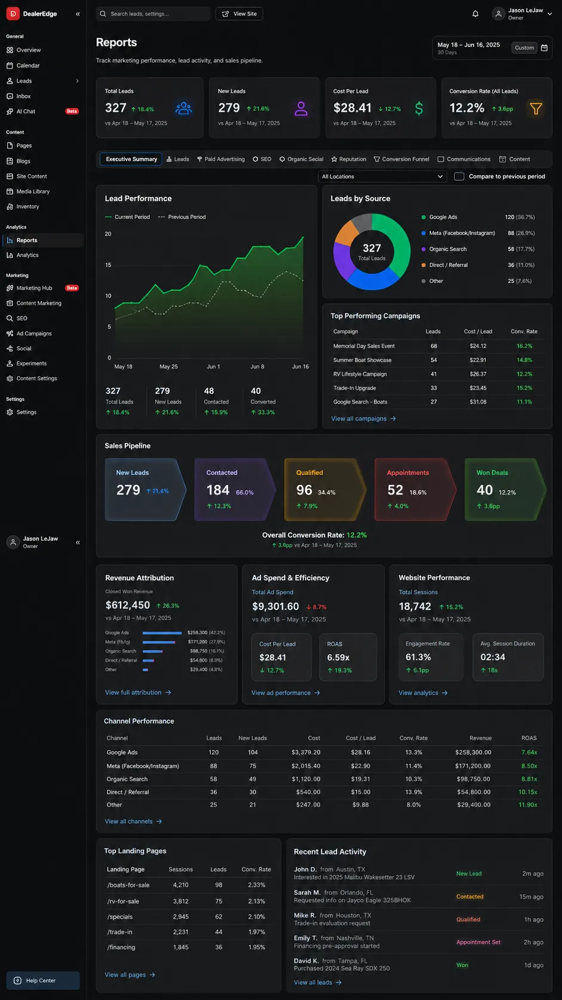
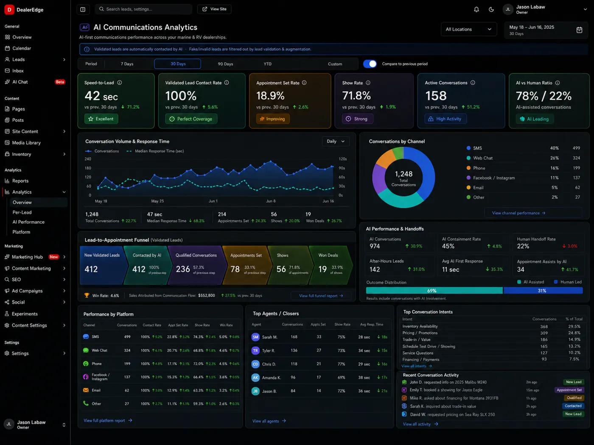

Know what's working. While it's still working.
Google, Meta, search, SEO, calls, texts, and sales — DealerEdge wires every data source into one live platform, tells you what's working in plain English, and optimizes continuously on real data. To sold boats, not clicks.

Real platform · real report · live data
Every number you're paying for, finally in one place.
No month-end mystery. No seven logins. No analyst required. DealerEdge connects every data source, shows you the whole picture live, and puts the AI to work on what it finds.
- Google Analytics + Search Console, connected direct
- Google Ads + Meta Ads — spend, clicks, conversions
- SEO data — rankings, keywords, site health
- Every call, text, chat, and form in one timeline
- Website behavior, down to the boat each buyer viewed
- Up-to-the-minute dashboards — not month-end reports
- Plain English: what's working, what's not, what it costs
- The full funnel — leads to appointments to showings to sold
- Cost per lead and return on ad spend, channel by channel
- Speed-to-lead, show rate, AI-vs-human — conversations measured too
- The AI optimizes continuously, on real data
- Budget flows to what sells boats — not what gets clicks
- Every sold boat traced to the campaign that produced it
- One platform — nothing to export, assemble, or reconcile
Same spend. Same channels. A completely different picture.
Here is where reporting breaks today — and what changes when every source feeds one platform that optimizes to sold boats.
Stop learning after the money is spent. See the month while it is still moving.
The verdict on March arrives in April — after every dollar is already spent.
DealerEdge updates while buyers are still shopping, so you can see what is working today.
Your numbers are split across seven separate logins — and no two of them agree.
Everything those seven tabs knew, on one screen, up to the minute.
Most attribution stops at the click. You paid for a lead, but nobody can prove whether it became a sold boat.
Now the whole journey is visible — search to listing, listing to conversation, conversation to won deal.
A dashboard tells you what happened. DealerEdge changes what happens next.
By the time the report lands and the meeting happens, two more months of budget are gone.
DealerEdge adjusts continuously, on real data — budget, bids, content, SEO. Not at next month's meeting.
And because every sale traces back to its source, DealerEdge is the only platform in the industry that optimizes to sold boats.
The conversations get measured too: every call, text, and AI reply — speed, appointments, show rate.
Every morning, owners get the only report that matters: what worked, what broke, and what to fix today.

Get The Boat
Off Your Lot
And Onto Your
Customer's Dock
Your numbers can start working harder this week. We'll show you what DealerEdge sees in your actual data.
Calculate your ROI →